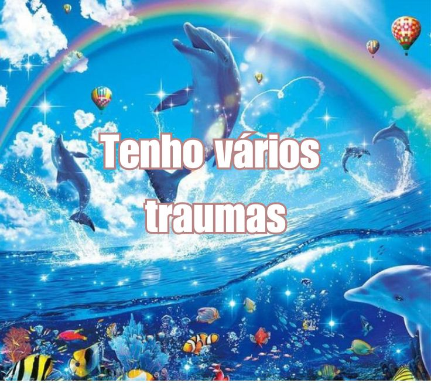

Bônus
Me conheçaQuem sou eu?? Rola ou não rola?Coisas que amoExperiências profissionaisBônus
Curiosidades Sobre Mim

- Nasci prematuro, de 6 meses.
- Já morei no Espírito Santo por um ano e meio.
- Tenho uma cicatriz no rosto que foi feita pela minha madrasta quando eu ainda morava com ela e com meu pai.
- Estorei a minha mão com uma bombinha quando eu tinha 11 anos.
- Não vejo a minha mãe desde os meus 6 anos de idade (e nem quero ver).
- Comecei a ter maior intimidade com meus parentes recentemente, porque quando eu morava com meu pai e minha madrasta, eu ficava praticamente preso, sem poder ter contato com eles.
- Comecei a conhecer Itapeva só agora, nesse 1 ano e meio que estou morando com a minha avó.
- Já tive cinco gatos chamados Sun, Soul, Rock, Midnight e Áurea. Infelizmente, eles tiveram que ficar quando eu me mudei para cá.
- Meu nome era para ter 'PH,' mas não souberam escrever na hora. Ele também foi inspirado no nome da minha mãe, e por isso, por um bom tempo, eu não gostei muito dele, mas hoje em dia, eu o amo.